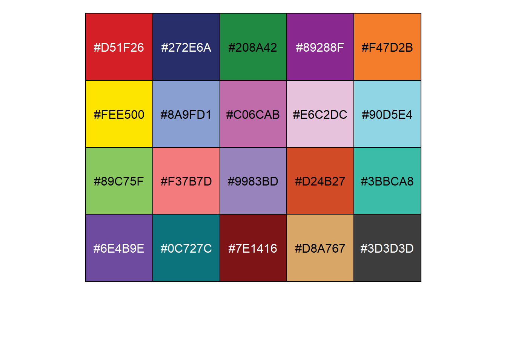
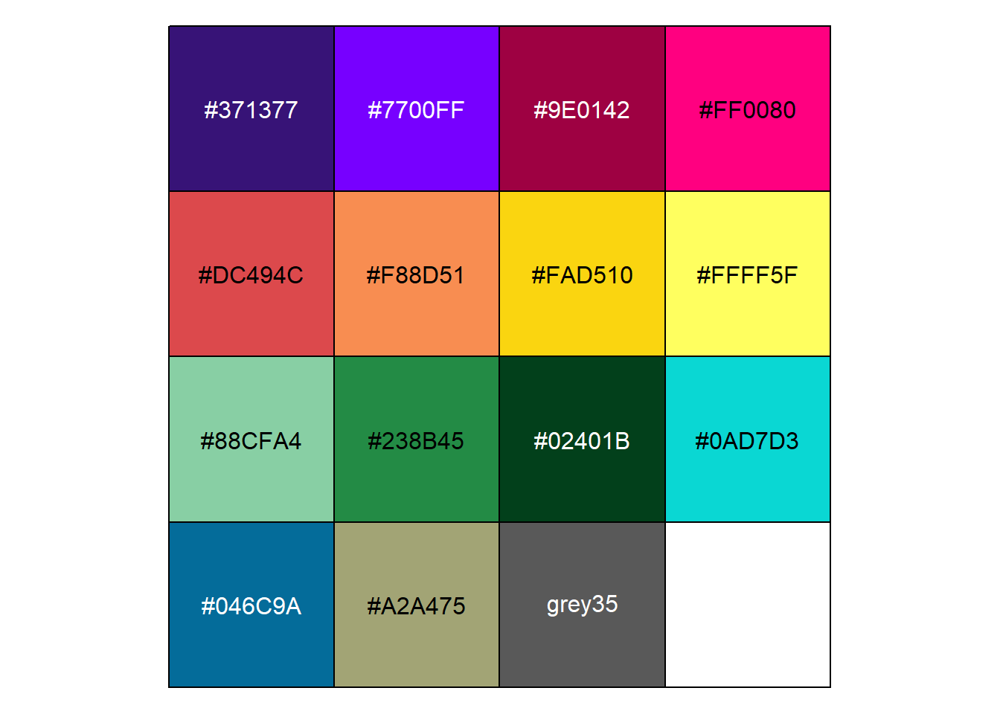
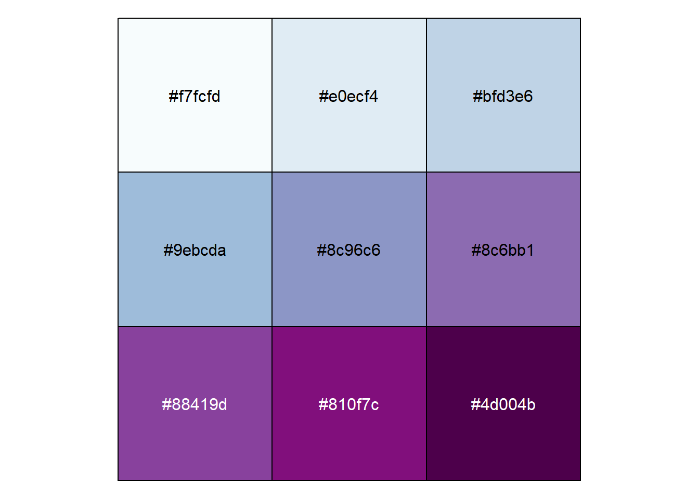

Chapter 3 useMyCol
This function provides ArchR package’s colors to plot.
Show all palettes:
library(jjAnno)##
## 载入程辑包：'jjAnno'## The following objects are masked _by_ '.GlobalEnv':
##
## p, pdotlibrary(scales)## Warning: 程辑包'scales'是用R版本4.1.3 来建造的# show all plattes
useMyCol(showAll = T)## [1] "stallion" "stallion2" "calm" "kelly" "bear"
## [6] "ironMan" "circus" "paired" "grove" "summerNight"
## [11] "zissou" "darjeeling" "rushmore" "captain" "horizon"
## [16] "horizonExtra" "blueYellow" "sambaNight" "solarExtra" "whitePurple"
## [21] "whiteBlue" "comet" "greenBlue" "beach" "coolwarm"
## [26] "fireworks" "greyMagma" "fireworks2" "purpleOrange"Draw these colors:
# plot colors
show_col(useMyCol('stallion',20))## [1] "This palatte have 20 colors!"
# ironMan
show_col(useMyCol('ironMan',15))## [1] "This palatte have 15 colors!"
# whitePurple
show_col(useMyCol('whitePurple',9))## [1] "This palatte have 9 colors!"